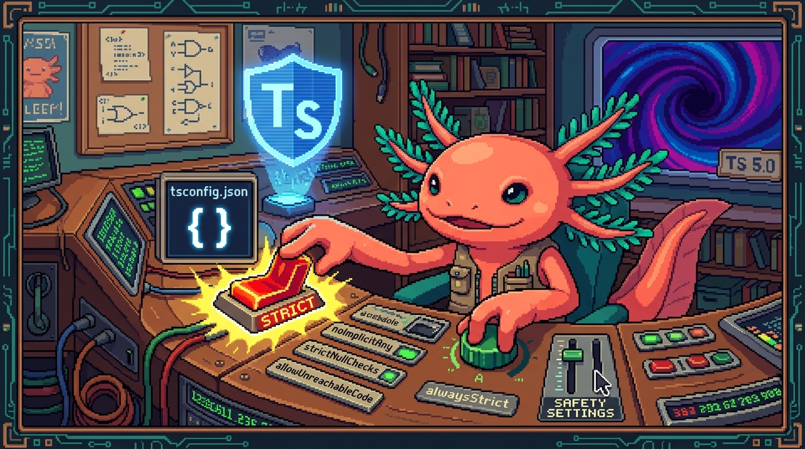

Capítulo 12 — tsconfig y el modo estricto

Hasta ahora escribías tipos y, por arte de magia, el editor te corregía. Pero ¿quién decide qué tan estricto es TypeScript contigo? ¿Quién le dice «mira en esta carpeta», «este código es para un navegador moderno» o «no me dejes pasar ni un solo
nulldespistado»? La respuesta es un archivo pequeño y muy poderoso:tsconfig.json. Es el panel de control de TypeScript. En este capítulo lo vamos a abrir tornillo por tornillo usando lostsconfig.jsonreales de RachaSimple (la app de hábitos) y de Faro (tu organizador de proyectos). Verás qué hace cada opción, por qué el modo estricto es tu mejor amigo aunque al principio parezca un profe muy exigente, y cómo leer los errores del compilador sin entrar en pánico. Bit, tu ajolote, te recuerda algo: TypeScript es JavaScript con tipos, ytsconfig.jsones solo el reglamento que dice cómo se revisan esos tipos. Nada que no puedas dominar. Vamos.
1. ¿Qué es tsconfig.json y para qué existe?
Cada proyecto de TypeScript tiene en su raíz un archivo llamado tsconfig.json. Cuando ejecutas el
compilador (la herramienta que revisa y traduce tu código), lo primero que hace es buscar este
archivo y leer sus instrucciones. Sin él, TypeScript no sabría qué carpetas mirar ni con qué
reglas trabajar.
🟦 ¿Qué significa? — Compilador (
tsc)El compilador de TypeScript es el programa que revisa tus tipos y traduce tu
.ts/.tsxa JavaScript normal que el navegador o Node entienden. Su comando se llamatsc(de TypeScript compiler). Para qué sirve: detectar errores antes de ejecutar, y convertir TypeScript en JavaScript. Dónde se usa: en RachaSimple y Faro,tsccorre cada vez que hacesnpm run build, revisando todo el proyecto de golpe.🟦 ¿Qué significa? —
tsconfig.jsonEs el archivo de configuración de TypeScript: un objeto JSON con todas las reglas del proyecto. Para qué sirve: decidir qué versión de JavaScript generar, qué carpetas incluir y qué tan estricta es la revisión de tipos. Dónde se usa: está en la raíz de Faro (
/Organizer/tsconfig.json) y de RachaSimple (/RachaSimple/tsconfig.json). Cada repo tiene el suyo.
Recuerda del Módulo 03: un archivo .json es solo datos en pares «clave: valor». Aquí la clave más
importante es compilerOptions, que agrupa todos los ajustes del compilador.
// Estructura mínima de un tsconfig.json
{
"compilerOptions": {
// ...aquí van todas las reglas...
},
"include": ["src"], // qué carpetas/archivos revisar
"exclude": ["node_modules"] // qué ignorar
}
💡 Tip
No tienes que memorizar las opciones. Casi siempre el
tsconfig.jsonlo genera la herramienta que usas (Vite en RachaSimple, Next.js en Faro) y tú solo lo ajustas. Lo importante es saber leerlo.
2. include y exclude: qué archivos mira TypeScript
Antes de revisar tipos, TypeScript necesita saber dónde está tu código. Eso lo dicen dos claves
que viven fuera de compilerOptions.
🟦 ¿Qué significa? —
includeLista de carpetas o patrones de archivos que TypeScript debe revisar. Para qué sirve: apuntar el compilador a tu código fuente y nada más. Dónde se usa: RachaSimple usa
"include": ["src"](solo la carpetasrc); Faro usa un patrón más amplio que incluye todos los.tsy.tsx.🟦 ¿Qué significa? —
excludeLista de carpetas que TypeScript debe ignorar. Para qué sirve: evitar perder tiempo revisando código que no es tuyo. Dónde se usa: Faro pone
"exclude": ["node_modules"]para no revisar las librerías descargadas (¡miles de archivos que no escribiste tú!).
Mira los dos repos lado a lado. Faro (Next.js):
// Faro: /Organizer/tsconfig.json (final del archivo)
"include": ["next-env.d.ts", "**/*.ts", "**/*.tsx", ".next/types/**/*.ts"],
"exclude": ["node_modules"]
RachaSimple (Vite + React):
// RachaSimple: /RachaSimple/tsconfig.json (final del archivo)
"include": ["src"],
"references": [{ "path": "./tsconfig.node.json" }]
🟦 ¿Qué significa? — Patrón glob (
**/*.ts)Un glob es una forma de escribir «todos los archivos que cumplan esta forma» con comodines.
*significa «cualquier nombre» y**significa «cualquier carpeta, por profunda que esté». Para qué sirve: incluir muchos archivos sin nombrarlos uno por uno. Dónde se usa: Faro usa**/*.tsxpara revisar todos sus componentes de React sin importar en qué subcarpeta estén.
3. target, module y lib: para qué motor generamos código
Estas tres opciones le dicen a TypeScript a qué tipo de JavaScript debe traducir y qué funciones del lenguaje puedes usar.
🟦 ¿Qué significa? —
targetLa versión de JavaScript que el compilador genera al final. Los valores son años:
ES2017,ES2022, etc. (de ECMAScript, el nombre oficial de JavaScript). Para qué sirve: elegir entre «JavaScript moderno y corto» o «JavaScript viejo y compatible con navegadores antiguos». Dónde se usa: Faro apunta a"ES2017"; RachaSimple a"ES2022"(más moderno, porque su público usa navegadores recientes).🟦 ¿Qué significa? —
moduleEl sistema de módulos que usará el código generado: cómo se escriben los
importyexportque viste en el Capítulo 10. Para qué sirve: decidir si los módulos se cargan al estilo moderno (esnext) o al estilo antiguo. Dónde se usa: ambos repos usan"esnext"/"ESNext", el estilo moderno deimport/export.🟦 ¿Qué significa? —
libLista de librerías de tipos incorporadas que TypeScript asume que existen en tu entorno: por ejemplo, los tipos del navegador (
DOM) o de las funciones modernas del lenguaje (esnext). Para qué sirve: que el editor conozca cosas comodocument,windowoPromisesin que las definas tú. Dónde se usa: Faro y RachaSimple incluyen"DOM"y"DOM.Iterable"porque ambos corren en el navegador y necesitan tipos comodocument.querySelector.
// RachaSimple: arranque de compilerOptions
"target": "ES2022",
"lib": ["ES2022", "DOM", "DOM.Iterable"],
"module": "ESNext",
💡 Tip
Regla mental sencilla:
target= a qué JavaScript traduzco,lib= qué tipos doy por existentes,module= cómo conecto los archivos entre sí. Tres preguntas distintas, tres opciones distintas.⚠️ Cuidado
Si pones
"lib"sin"DOM"y luego usasdocument.getElementById, el compilador te dirá quedocumentno existe. No es que tu código esté mal: es que le quitaste al compilador la «lista de cosas conocidas» del navegador. En RachaSimple y Faro nunca faltaDOMpor eso.
4. moduleResolution y paths: cómo encuentra TypeScript tus imports
Cuando escribes import { algo } from "...", TypeScript tiene que encontrar ese archivo. Dos
opciones gobiernan esa búsqueda.
🟦 ¿Qué significa? —
moduleResolutionLa estrategia que usa TypeScript para localizar el archivo de un
import. Para qué sirve: seguir las mismas reglas que tu herramienta de construcción. Dónde se usa: Faro y RachaSimple usan"bundler", la estrategia pensada para herramientas modernas como Vite y Next.js (un bundler es el programa que junta todos tus archivos en uno para el navegador).🟦 ¿Qué significa? —
paths(alias de import)Un diccionario de atajos para los imports. Te permite escribir
@/algoen vez de../../../algo. Para qué sirve: evitar rutas relativas larguísimas y frágiles. Dónde se usa: ambos repos definen el alias@/*. En el Capítulo 11 visteimport { Badge } from "@/components/ui"en Faro: ese@es exactamente este atajo.
Los dos repos usan el mismo alias @, solo que apuntando a su propia carpeta src:
// Faro
"paths": {
"@/*": ["./src/*"]
}
// RachaSimple (necesita además baseUrl)
"baseUrl": ".",
"paths": {
"@/*": ["src/*"]
}
🟦 ¿Qué significa? —
baseUrlLa carpeta base desde la que se calculan los
paths. Para qué sirve: darle un punto de partida a los alias. Dónde se usa: RachaSimple pone"baseUrl": "."(la raíz del proyecto), y sobre esa base el alias@/*apunta asrc/*.🔎 En tu código
Gracias a estos
paths, cuando un archivo de RachaSimple necesita el hook de hábitos puede escribirimport { useHabits } from "@/hooks/useHabits"desde cualquier carpeta, sin contar cuántos../necesita. El alias siempre apunta al mismo lugar.
5. La estrella del capítulo: strict
Llegamos a la opción más importante de todas. Una sola línea que cambia por completo cuánto te protege TypeScript.
🟦 ¿Qué significa? —
strict(modo estricto)Un interruptor maestro que activa de golpe un grupo de revisiones severas de tipos. Para qué sirve: atrapar los errores más comunes y peligrosos (valores
nullolvidados, variables sin tipo, etc.) antes de que rompan la app. Dónde se usa: tanto Faro como RachaSimple tienen"strict": true. Es el estándar recomendado para proyectos serios.
// Faro y RachaSimple: ambos tienen esta línea
"strict": true,
Poner "strict": true es como encender varios interruptores a la vez. Cada uno tiene su propio
nombre, y vale la pena conocer los dos más importantes, porque son los que más errores te van a
mostrar al principio.
🟦 ¿Qué significa? —
strictNullChecksUna revisión (incluida en
strict) que separanullyundefineddel resto de tipos. Sin ella, TypeScript dejaba que unstringfuera secretamentenull. Con ella, si algo puede sernull, estás obligado a comprobarlo antes de usarlo. Para qué sirve: evitar el error más famoso de JavaScript: "Cannot read property of null". Dónde se usa: en Faro, donde un proyecto puede no tener descripción todavía, esta revisión te obliga a manejar el caso «todavía no hay dato».🟦 ¿Qué significa? —
noImplicitAnyUna revisión (incluida en
strict) que prohíbe elanyinvisible. Si TypeScript no puede adivinar el tipo de algo y tú no lo escribiste, en vez de poneranyen silencio, te avisa con un error. Para qué sirve: que no queden huecos sin tipar por descuido. Dónde se usa: en los hooks tipados de RachaSimple, obliga a que cada parámetro de cada función diga qué tipo recibe.
Recuerda del Módulo 03 y de capítulos anteriores: null es «vacío a propósito», undefined es «no
existe todavía», y any es «cualquier cosa, sin revisar». El modo estricto vigila precisamente esas
tres trampas.
💡 Tip
Hay otras revisiones dentro de
strict(comostrictFunctionTypesostrictBindCallApply), pero las dos que de verdad notarás como principiante sonstrictNullChecksynoImplicitAny. Si entiendes esas dos, entiendes el 90% del modo estricto.
6. ¿Por qué el modo estricto te protege (y no te molesta)?
Al principio el modo estricto se siente como un profe quisquilloso: marca errores donde tu código
«parecía funcionar». Pero piénsalo así: cada error que tsc te muestra en tu editor es un error que
no le va a aparecer al usuario de RachaSimple o Faro. Es un bug atrapado en la sala de ensayo, no
en el escenario.
Veamos un caso concreto del tipo de dato que maneja Faro. Imagina un proyecto cuya descripción todavía no ha sido generada por la IA:
type Project = {
name: string;
description: string | null; // puede no tener descripción aún
};
function mostrarLargo(p: Project) {
// ❌ Error con strictNullChecks:
// 'p.description' is possibly 'null'.
return p.description.length;
}
Sin modo estricto, este código compilaría feliz... y luego explotaría en producción el día que un
proyecto sin descripción llegara a esa función. Con strictNullChecks, TypeScript te detiene antes y
te obliga a manejar el caso vacío:
function mostrarLargo(p: Project) {
if (p.description === null) {
return 0; // caso «todavía no hay descripción»
}
return p.description.length; // ✅ aquí ya es string seguro
}
🔎 En tu código
Este patrón —comprobar
nullantes de usar el dato— es exactamente lo que llamaste estrechamiento en el Capítulo 06. El modo estricto y el estrechamiento son socios: el primero te obliga a comprobar, el segundo es la técnica con la que compruebas.⚠️ Cuidado
La tentación del principiante es «apagar» el error con
anyo con el operador!(que dice «yo sé que no es null, confía en mí»). Resiste. Apagar la alarma no apaga el incendio: solo lo escondes hasta que el usuario lo encuentre. En RachaSimple y Faro se prefiere comprobar de verdad.
7. Las revisiones extra de RachaSimple
Faro se queda con el strict que trae Next.js por defecto. RachaSimple es aún más estricto: su
tsconfig.json añade revisiones que strict no incluye. Conocerlas te enseña qué tan lejos puede
llegar la protección.
// RachaSimple: revisiones extra encima de strict
"noUnusedLocals": true,
"noUnusedParameters": true,
"noFallthroughCasesInSwitch": true,
"noUncheckedIndexedAccess": true,
🟦 ¿Qué significa? —
noUnusedLocalsMarca un error si declaras una variable y nunca la usas. Para qué sirve: mantener el código limpio, sin restos olvidados. Dónde se usa: en RachaSimple, si en un hook creas una variable de «borrador» y la dejas sin usar, el compilador te lo recuerda.
🟦 ¿Qué significa? —
noUnusedParametersIgual que la anterior, pero para parámetros de función que no usas. Para qué sirve: detectar argumentos que sobran o que olvidaste aprovechar. Dónde se usa: en los componentes de RachaSimple, evita que una prop quede aceptada pero ignorada por error.
🟦 ¿Qué significa? —
noFallthroughCasesInSwitchProhíbe que un
casede unswitch«se cuele» al siguiente por olvidar elbreak. Para qué sirve: evitar un bug clásico y difícil de ver. Dónde se usa: cuando RachaSimple decide qué hacer según el estado de un hábito, garantiza que cada caso esté cerrado.🟦 ¿Qué significa? —
noUncheckedIndexedAccessHace que acceder a un elemento de un array por índice (
lista[0]) devuelva «el tipo oundefined», porque ese índice podría no existir. Para qué sirve: obligarte a comprobar antes de confiar en que un elemento está ahí. Dónde se usa: en RachaSimple, al leer el primer check-in de una lista de hábitos, te obliga a contemplar que la lista esté vacía.
// RachaSimple: con noUncheckedIndexedAccess activado
const checkins: string[] = [];
const primero = checkins[0]; // tipo: string | undefined
// ❌ Error: 'primero' is possibly 'undefined'.
console.log(primero.toUpperCase());
// ✅ Hay que comprobar primero
if (primero !== undefined) {
console.log(primero.toUpperCase());
}
💡 Tip
No todos los proyectos usan estas cuatro. Son una decisión del equipo: RachaSimple eligió ser muy riguroso. Si un día empiezas tu propio proyecto, puedes activarlas desde el día uno (es fácil) o añadirlas después (puede dar muchos errores de golpe). Empezar estricto duele menos.
8. Otras opciones que verás en tus repos
Hay varias claves más en tus tsconfig.json reales. No te asustes: aquí están las que faltan, en
versión corta.
🟦 ¿Qué significa? —
noEmitLe dice a
tscque revise los tipos pero NO genere archivos JavaScript. Para qué sirve: dejar que otra herramienta (Vite, Next.js) haga la traducción, mientrastscsolo actúa como revisor. Dónde se usa: Faro y RachaSimple ambos ponen"noEmit": true, porque la traducción real la hacen sus bundlers.🟦 ¿Qué significa? —
jsxLe indica al compilador cómo tratar el JSX (el HTML dentro del código de React que viste en el Capítulo 11). Para qué sirve: que TypeScript entienda etiquetas como
<Badge>. Dónde se usa: Faro usa"preserve"(deja el JSX para que Next.js lo procese); RachaSimple usa"react-jsx"(el modo moderno de React 18).🟦 ¿Qué significa? —
resolveJsonModulePermite importar archivos
.jsondirectamente como si fueran datos tipados. Para qué sirve: traer un archivo de configuración o de textos sin parsearlo a mano. Dónde se usa: ambos repos lo activan; útil cuando importas datos fijos guardados en JSON.🟦 ¿Qué significa? —
esModuleInteropSuaviza las diferencias entre los dos estilos de módulos (el viejo de Node y el moderno de
import/export) para que mezclarlos no dé errores raros. Para qué sirve: que librerías antiguas se importen con la sintaxis moderna sin pelear. Dónde se usa: Faro lo activa para convivir con paquetes de distintas épocas.🟦 ¿Qué significa? —
skipLibCheckLe dice a
tscque no revise los tipos dentro de las librerías que descargaste, solo los tuyos. Para qué sirve: acelerar la compilación y evitar errores en código que no controlas. Dónde se usa: los dos repos lo activan; es práctica estándar.💡 Tip
No necesitas dominar todas estas hoy. Con que sepas buscar el nombre de la opción cuando la veas, vas sobradísimo. El
tsconfig.jsonse lee, no se memoriza.
9. Cómo leer y resolver un error de tsc
Los errores del compilador asustan al principio porque vienen en inglés y con códigos. Pero tienen siempre la misma forma, y una vez que la reconoces, son tu mejor herramienta de aprendizaje.
🟦 ¿Qué significa? — Error de compilación
Un mensaje de
tscque dice que tu código rompe alguna regla de tipos. Aparece en el editor (subrayado rojo) y en la terminal al hacernpm run build. Para qué sirve: señalarte el problema exacto antes de ejecutar. Dónde se usa: lo verás cada vez quenpm run buildde Faro o RachaSimple falle por un tipo mal puesto.
Un error típico se ve así en la terminal:
src/hooks/useHabits.ts:42:10 - error TS2532: Object is possibly 'undefined'.
42 return habits[0].name;
~~~~~~~~~~
Léelo de izquierda a derecha, en cuatro pedazos:
src/hooks/useHabits.ts:42:10— el archivo, la línea (42) y la columna (10). Aquí está el problema.error TS2532— el código del error. Es buscable: pegaTS2532en internet y encuentras explicaciones.Object is possibly 'undefined'— la frase clave. Aquí dice: «eso que usas podría no existir».- El subrayado
~~~~— te señala exactamente la parte sospechosa.
💡 Tip
El error casi siempre te dice qué tipo esperaba y qué tipo le diste. Cuando veas «Type 'X' is not assignable to type 'Y'», traduce mentalmente: «le pasé una X donde se necesitaba una Y». La mitad de los errores se resuelven con solo leer esa frase con calma.
⚠️ Cuidado
No copies y pegues «soluciones» de internet que silencien el error con
anyo// @ts-ignore(un comentario que apaga la revisión de la línea siguiente). Eso es taparte los ojos. El compilador tiene razón el 99% de las veces; tu trabajo es entender por qué y arreglar el dato, no callar al mensajero.🔎 En tu código
Cuando hagas
npm run builden Faro (la regla del proyecto dice que debe pasar antes de fusionar), ese build corretscpor dentro. Si ves errores rojos, son exactamente estos. Léelos con la receta de los cuatro pedazos y resuélvelos uno a uno: archivo, línea, código, frase clave.
10. Un detalle de RachaSimple: archivos tsconfig múltiples
Quizá notaste que RachaSimple tiene dos archivos: tsconfig.json y tsconfig.node.json. No es un
error, es una técnica para separar dos mundos dentro del mismo proyecto.
🟦 ¿Qué significa? —
references(referencias de proyecto)Una forma de enlazar varios
tsconfig.jsondentro de un mismo repo, cada uno con sus propias reglas. Para qué sirve: que el código de la app (que corre en el navegador) y el código de configuración (que corre en Node, comovite.config.ts) tengan ajustes distintos. Dónde se usa: eltsconfig.jsonde RachaSimple referencia atsconfig.node.json, que solo revisavite.config.tsyvitest.config.ts.
// RachaSimple: tsconfig.json enlaza al de Node
"references": [{ "path": "./tsconfig.node.json" }]
// RachaSimple: tsconfig.node.json (solo herramientas)
"composite": true,
"include": ["vite.config.ts", "vitest.config.ts"]
🟦 ¿Qué significa? —
compositeUna opción que marca un
tsconfig.jsoncomo parte de un sistema de referencias y le permite ser «enlazado» desde otro. Cuando un proyecto va a ser referenciado conreferences(como acabas de ver), TypeScript exige que tenga"composite": true. Para qué sirve: habilitar el modo de proyectos enlazados y guardar información extra que acelera recompilaciones. Dónde se usa: en RachaSimple, eltsconfig.node.jsonlleva"composite": truejustamente porque eltsconfig.jsonprincipal lo referencia.💡 Tip
No te preocupes por dominar las referencias de proyecto ahora. Solo recuerda la idea: el código de la app y el de las herramientas de construcción a veces necesitan reglas distintas, y por eso hay más de un
tsconfig. Faro, al usar Next.js, se las arregla con uno solo.
✅ Checklist — ¿ya domino esto?
- [ ] Sé que
tsconfig.jsones el panel de control de TypeScript y vive en la raíz del proyecto. - [ ] Entiendo qué hacen
includeyexclude(qué revisar y qué ignorar). - [ ] Distingo
target(a qué JS traduzco),lib(qué tipos doy por existentes) ymodule(cómo conecto archivos). - [ ] Sé qué es el alias
@/*enpathsy por qué evita rutas relativas largas. - [ ] Puedo explicar qué activa
"strict": truey nombrarstrictNullChecksynoImplicitAny. - [ ] Entiendo por qué el modo estricto me protege en vez de molestarme.
- [ ] Reconozco las revisiones extra de RachaSimple (
noUnusedLocals,noUncheckedIndexedAccess...). - [ ] Sé leer un error de
tscen sus cuatro partes: archivo, línea, código y frase clave. - [ ] Sé que NO debo silenciar errores con
anyo@ts-ignore, sino arreglar la causa.
🧪 Ejercicios
-
Lectura de configuración. Abre el
tsconfig.jsonde Faro (/Organizer/tsconfig.json) y el de RachaSimple (/RachaSimple/tsconfig.json). Haz una tabla de tres columnas (opción, valor en Faro, valor en RachaSimple) con:target,module,jsxystrict. ¿En cuáles coinciden y en cuáles no? -
Caza del interruptor. Sin mirar el capítulo, explica con tus palabras qué hace
strictNullChecksy da un ejemplo de un dato de Faro que «puede sernull». (Pista: piensa en algo que la IA todavía no ha generado.) -
💻 Provoca un error a propósito. Crea un archivo
prueba.ts. Declaraconst lista: string[] = []y luego escribeconsole.log(lista[0].toUpperCase()). ConnoUncheckedIndexedAccessactivado, esto debe marcar error. Léelo en sus cuatro partes y luego arréglalo comprobandoundefinedantes de usar el elemento. -
💻 Inventa un alias. En un
tsconfig.jsonde práctica, añade apathsun alias nuevo, por ejemplo"@hooks/*": ["src/hooks/*"]. Escribe un import imaginario usando ese alias y compáralo con cómo se vería la misma ruta sin alias (con../../). ¿Cuál prefieres leer? -
💻 Apaga y enciende strict. En un proyecto de práctica, escribe la función
mostrarLargodel apartado 6 (condescription: string | null). Pon"strict": false, observa que no hay error. Luego ponlo entruey observa cómo aparece. Anota qué cambió. (Esto te muestra, en vivo, para qué sirve el modo estricto.) -
Diagnóstico de errores. Te dan este mensaje:
src/components/HabitCard.tsx:18:7 - error TS2322: Type 'string' is not assignable to type 'number'.Responde en tres frases: ¿en qué archivo y línea está?, ¿qué tipo esperaba el código?, ¿qué tipo le diste? Propón en una frase cómo lo arreglarías.
Bit cierra el cuaderno y mueve sus branquias con orgullo: ahora no solo escribes tipos, sino que entiendes el reglamento que decide cómo se revisan. El
tsconfig.jsonya no es un archivo misterioso de la raíz del proyecto: es tu panel de control, y el modo estricto es el cinturón de seguridad que te lleva a producción sin sustos. En el siguiente módulo darás el salto a React de verdad, y todo lo que aprendiste aquí —tipos, estrechamiento, configuración estricta— va contigo. Nos vemos en el Módulo 06.